维护者留下的只有「探案板」一个方向（D7）。这里是三份**把它做好的不同改法**（P1/P2/P3）与三个**另开一个世界**的方向（W1/W2/W3）。
每份都是单文件、零依赖、双击即开；同一份真数据（地图 #604），同一套四态语义：走亮 / 照亮中 / 现在能做 / 雾里。
用上面的按钮或键盘 ← → 切换；点右上「打开原型 ↗」直接在浏览器里开那个 HTML。
探案板原样保留，把工艺做实：按层分行、卡片互不重叠、红绳只走卡片之间的缝道、纸微转但文字恒定水平
最狠的一招：雾是一张没拆开的证物袋（点一下撕开）；状态用颜色＋描边形状＋顶带纹理＋状态字形四样叠加
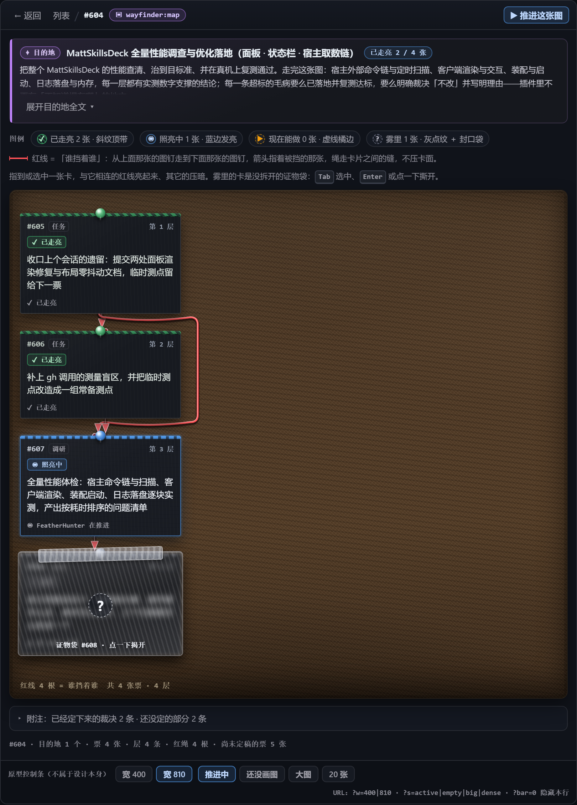
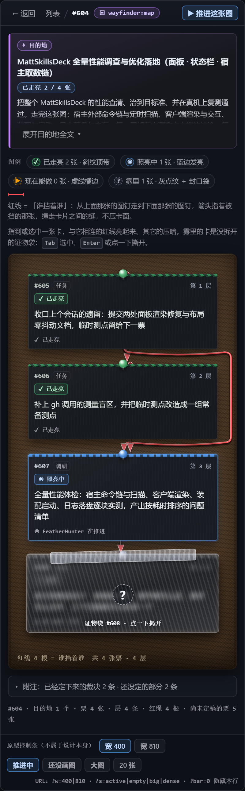
卡片不再散落，挂在一条从上到下的主轴上——主轴本身就是「走过留下的亮痕」
最狠的一招：轴末端没走到的那一段盖着一条火漆封条：撕开只是看清，不代表走通
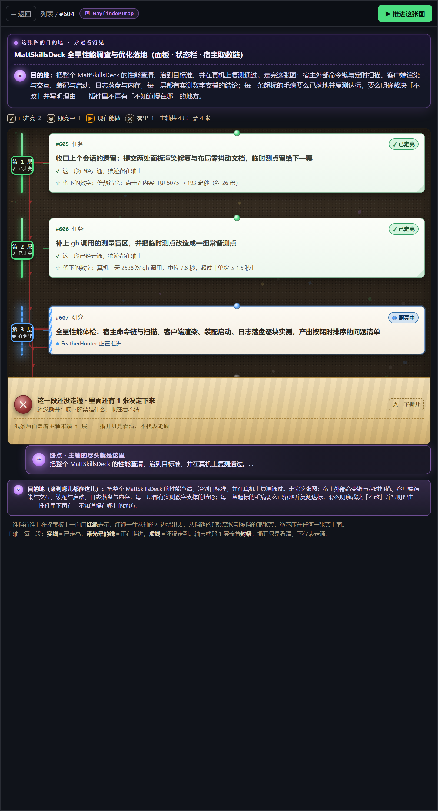
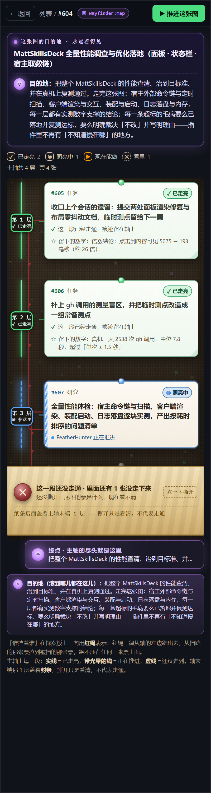
每层一个档案抽屉，卡片是袋里的物证；把六个前端库偷来的五条技法全用上
最狠的一招：Canvas 挖洞雾 ＋ 明度阶梯 ＋ 三型色觉模拟开关（技法重新长在探案板身上）
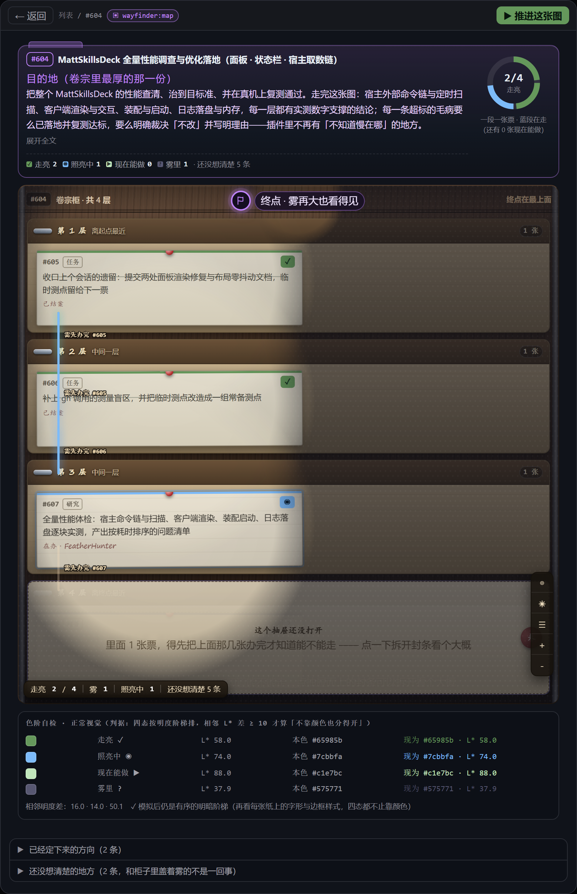
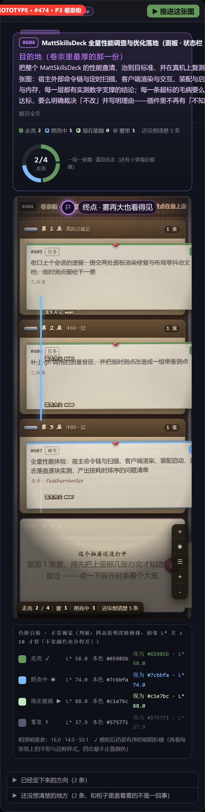
地图是一条往地下打的矿道：层就是深度，票是作业面，目的地是矿脉
最狠的一招：「不知道」在这里天然成立——岩层本来就要挖开才知道，切面画的是斜线纹理
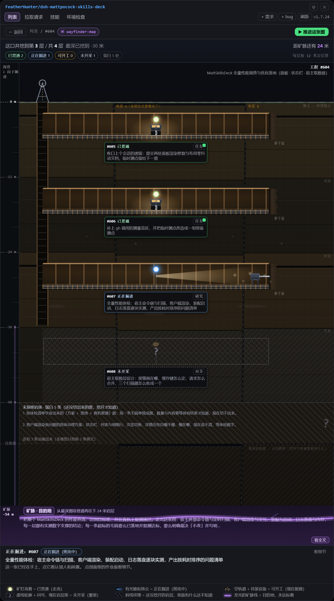
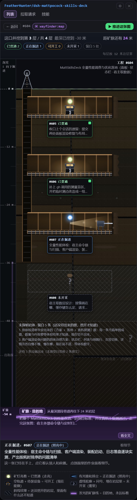
每张票是一个航班：已到达 / 登机中 / 准点 / 待定；板上方一条塔台跑道，一层一段，尽头是永远亮着的灯塔
最狠的一招：一屏装得下 20 个航班，而「待定」本身就是诚实的（虚线＋删除线＋雾块盖住标题后半截）
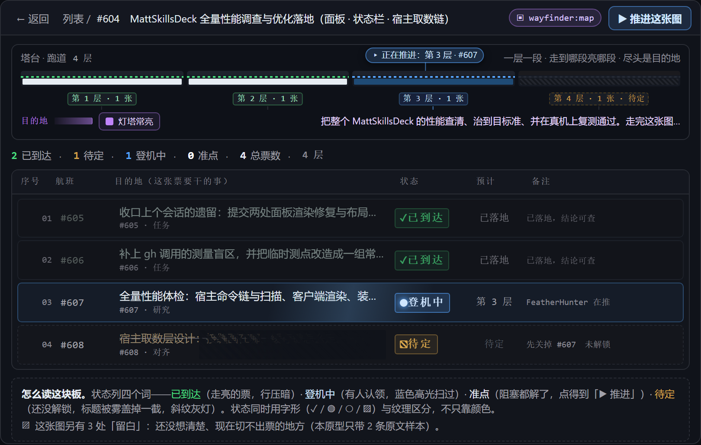
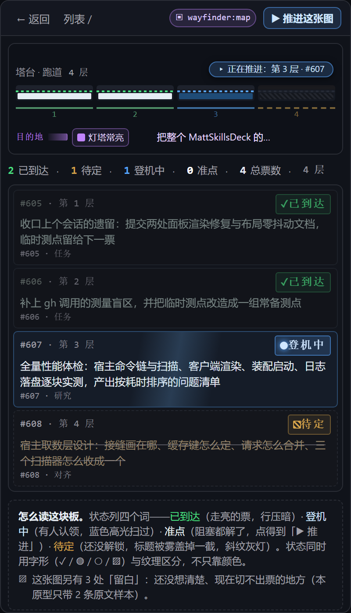
雾里的票是一团粒子组成的概率云；点一下等于「观测」，粒子收束成一张确定的票
最狠的一招：观测会波及邻居——看清一处，周围也跟着清楚一点
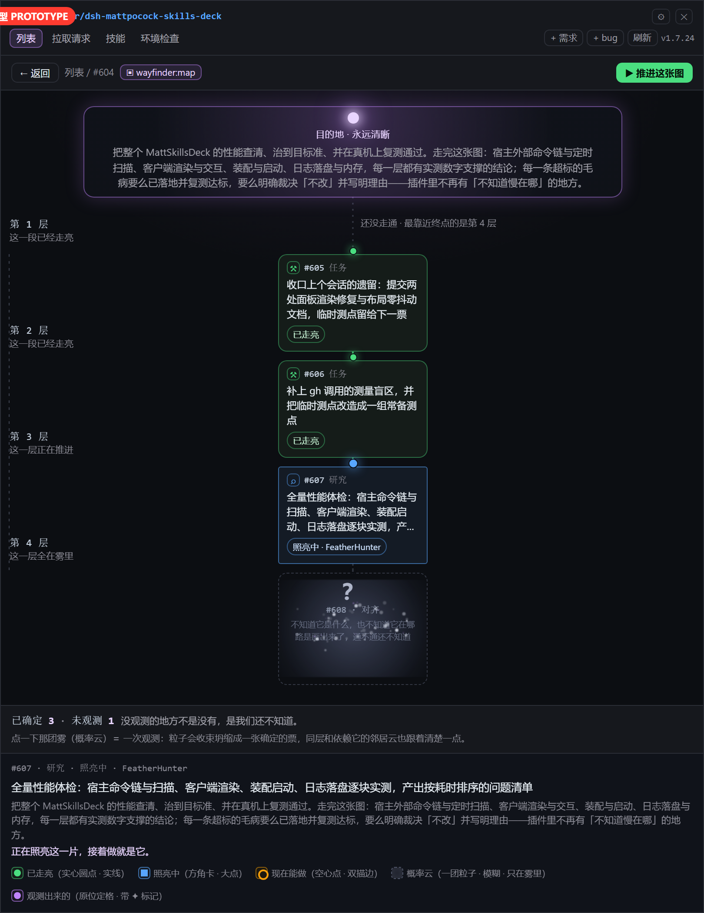
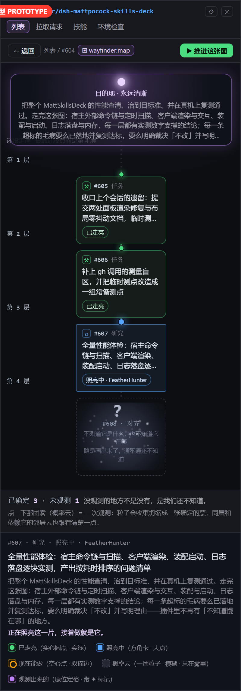
现在线上的地图详情页：票面平铺、没有雾、底部圆环按「层 +1」算（与票数无关）
最狠的一招：对照用：改完之后要能一眼看出差别